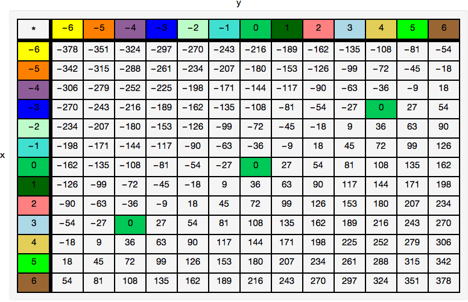

Ken Levasseur, Al Doerr, Michiel Smid, Oscar Levin, Charles M. Grinstead, J. Laurie Snell, Eric Lehman, F. Thomson Leighton, Albert R Meyer, Jeff Erickson, Kenneth P. Bogart, Carol Chritchlow, David Eck, OpenDSA Project, L.J. Miller
Section11.4Greatest Common Divisors and the Integers Modulo \(n\)
In this section introduce the greatest common divisor operation, and introduce an important family of concrete groups, the integers modulo \(n\text{.}\)
Subsection11.4.1Greatest Common Divisors
We start with a theorem about integer division that is intuitively clear. We leave the proof as an exercise.
Theorem11.4.1.The Division Property for Integers.
If \(m, n\in \mathbb{Z}\text{,}\)\(n>0\text{,}\) then there exist two unique integers, \(q\) (the quotient) and \(r\) (the remainder), such that \(m = n q + r\) and \(0 \leq r < n\text{.}\)
Note11.4.2.
The division property says that if \(m\) is divided by \(n\text{,}\) you will obtain a quotient and a remainder, where the remainder is less than \(n\text{.}\) This is a fact that most elementary school students learn when they are introduced to long division. In doing the division problem \(1986 \div 97\text{,}\) you obtain a quotient of 20 and a remainder of 46. This result could either be written \(\frac{1986}{97}=
20+\frac{46}{97}\) or \(1986 = 97\cdot 20 + 46\text{.}\) The latter form is how the division property is normally expressed in higher mathematics.
List11.4.3.
We now remind the reader of some interchangeable terminology that is used when \(r=0\text{,}\) i. e., \(m = n q\text{.}\) All of the following say the same thing, just from slightly different points of view.
divides
\(n\) divides \(m\)
multiple
\(m\) is a multiple of \(n\)
factor
\(n\) is a factor of \(m\)
divisor
\(n\) is a divisor of \(m\)
We use the notation \(n \mid m\) if \(n\) divides \(m\text{.}\)
For example \(2\mid 18\) and \(9\mid 18\) , but \(4\nmid 18\text{.}\)
Caution: Don’t confuse the “divides” symbol with the “divided by” symbol. The former is vertical while the latter is slanted. Notice however that the statement \(2
\mid 18\) is related to the fact that \(18/2\) is a whole number.
Definition11.4.4.Greatest Common Divisor.
Given two integers, \(a\) and \(b\text{,}\) not both zero, the greatest common divisor of \(a\) and \(b\) is the positive integer \(g=\gcd(a,b)\) such that \(g \mid a\text{,}\)\(g\mid b\text{,}\) and
\begin{equation*}
c\mid a \textrm{ and } c \mid b
\Rightarrow c \mid g
\end{equation*}
A little simpler way to think of \(\gcd(a,b)\) is as the largest positive integer that is a divisor of both \(a\) and \(b\text{.}\) However, our definition is easier to apply in proving properties of greatest common divisors.
For small numbers, a simple way to determine the greatest common divisor is to use factorization. For example if we want the greatest common divisor of 660 and 350, you can factor the two integers: \(660=2^2\cdot 3\cdot 5\cdot 11\) and \(350 = 2 \cdot
5^2\cdot 7\text{.}\) Single factors of 2 and 5 are the only ones that appear in both factorizations, so the greatest common divisor is \(2\cdot 5 =10\text{.}\)
Some pairs of integers have no common divisors other than 1. Such pairs are called relatively prime pairs.
Definition11.4.5.Relatively Prime.
A pair of integers, \(a\) and \(b\text{,}\) are relatively prime if \(\gcd(a,
b)=1\)
For example, \(128=2^7\) and \(135=3^3\cdot 5\) are relatively prime. Notice that neither 128 nor 135 are primes. In general, \(a\) and \(b\) need not be prime in order to be relatively prime. However, if you start with a prime, like 23, for example, it will be relatively prime to everything but its multiples. This theorem, which we prove later generalizes this observation.
Theorem11.4.6.
If \(p\) is a prime and \(a\) is any integer such that \(p\nmid a\) then \(\gcd(a,
p) = 1\)
Subsection11.4.2The Euclidean Algorithm
As early as Euclid’s time it was known that factorization wasn’t the best way to compute greatest common divisors.
The Euclidean Algorithm is based on the following properties of the greatest common divisor.
\begin{gather}
\gcd(a,0)= a \textrm{ for } a\neq 0\tag{11.4.1}\\
\gcd(a, b)= \gcd(b, r)\textrm{ if } b\neq
0\textrm{ and }a = b q + r\tag{11.4.2}
\end{gather}
To compute \(\gcd(a,b)\text{,}\) we divide \(n\) into \(m\) and get a remainder \(r\) such that \(0\leq r <\lvert b\rvert \text{.}\) By the property above, \(\gcd(a, b)=
\gcd(b, r)\text{.}\) We repeat the process until we get zero for a remainder. The last nonzero number that is the second entry in our pairs is the greatest common divisor. This is inevitable because the second number in each pair is smaller than the previous one. Table 11.4.7 shows an example of how this calculation can be systematically performed.
Table11.4.7.A Table to Compute \(\gcd(99,53)\)
\(q\)
\(m\)
\(n\)
-
99
53
1
53
46
1
46
7
6
7
4
1
4
3
1
3
1
3
1
0
Here is a Sage computation to verify that \(\gcd(99, 53) = 1\text{.}\) At each line, the value of \(m\) is divided by the value of \(n\text{.}\) The quotient is placed on the next line along with the new value of \(m\text{,}\) which is the previous \(n\text{;}\) and the remainder, which is the new value of \(n\text{.}\) Recall that in Sage, a%b is the remainder when dividing b into a.
Investigation11.4.1.
If you were allowed to pick two numbers less than 100, which would you pick in order to force Euclid to work hardest? Here’s a hint: The size of the quotient at each step determines how quickly the numbers decrease.
If quotient in division is 1, then we get the slowest possible completion. If \(a
= b + r\text{,}\) then working backwards, each remainder would be the sum of the two previous remainders. This described a sequence like the Fibonacci sequence and indeed, the greatest common divisor of two consecutive Fibonacci numbers will take the most steps to reach a final value of 1.
For fixed values of \(m\) and \(n\text{,}\) consider integers of the form \(a x+b y\) where \(x\) and \(y\) can be any two integers. For example if \(m\) = 36 and \(n\) = 27, some of these results are tabulated below with \(x\) values along the left column and the \(y\) values on top.

Figure11.4.8.Linear combinations of 36 and 27
Do you notice any patterns? What is the smallest positive value that you see in this table? How is it connected to 36 and 27?
Theorem11.4.9.
If \(m\) and \(n\) are positive integers, the smallest positive value of \(a
x + b y\) is the greatest common divisor of \(m\) and \(n\text{,}\)\(\gcd(a,b)\text{.}\)
If \(g = \gcd(a, b)\text{,}\) since \(g \mid a\) and \(g \mid b\text{,}\) we know that \(g
\mid (a x + b y)\) for any integers \(x\) and \(y\text{,}\) so \(a x + b y\) can’t be less than \(g\text{.}\) To show that \(g\) is exactly the least positive value, we show that \(g\) can be attained by extending the Euclidean Algorithm. Performing the extended algorithm involves building a table of numbers. The way in which it is built maintains an invariant, and by The Invariant Relation Theorem, we can be sure that the desired values of \(x\) and \(y\) are produced. The subjects of invariants and correctness will be covered in depth later in Chapter 17
To illustrate the algorithm, Table 11.4.10 displays how to compute \(\gcd(152,53)\text{.}\) In the \(r\) column, you will find 152 and 53, and then the successive remainders from division. So each number in \(r\) after the first two is the remainder after dividing the number immediately above it into the next number up. To the left of each remainder is the quotient from the division. In this case the third row of the table tells us that \(152 = 53\cdot 2 + 46\text{.}\) The last nonzero value in \(r\) is the greatest common divisor.
Table11.4.10.The extended Euclidean algorithm to compute \(\gcd(152,53)\)
\(q\)
\(r\)
\(s\)
\(t\)
\(--\)
152
1
0
\(--\)
53
0
1
2
46
1
\(-2\)
1
7
\(-1\)
3
6
4
7
\(-20\)
1
3
\(-8\)
23
1
1
15
\(-43\)
3
0
\(-53\)
152
The “\(s\)” and “\(t\)” columns are new. The values of \(s\) and \(t\) in each row are maintained so that \(152s + 53t\) is equal to the number in the \(r\) column. Notice that
Table11.4.11.Invariant in computing \(\gcd(152,53)\)
\(152 = 152\cdot 1+ 53\cdot 0\)
\(53 =152\cdot 0 + 53\cdot 1\)
\(46 = 152\cdot 1 + 53\cdot (-2)\)
\(\vdots\)
\(1 = 152\cdot 15 + 53\cdot (-43)\)
\(0 = 152 \cdot (-53) + 53\cdot 152\)
The next-to-last equation is what we’re looking for in the end! The main problem is to identify how to determine these values after the first two rows. The first two rows in these columns will always be the same. Let’s look at the general case of computing \(\gcd(a,b)\text{.}\) If the \(s\) and \(t\) values in rows \(i - 1\) and \(i - 2\) are correct, we have
\begin{equation*}
(A)\textrm{ }\left\{
\begin{array}{c}
a s_{i-2}+b t_{i-2}=r_{i-2} \\
a s_{i-1}+b t_{i-1}=r_{i-1} \\
\end{array}
\right.
\end{equation*}
If you substitute the expressions for \(r_{i-1}\) and \(r_{i-2}\) from (A) into this last equation and then collect the \(m\) and \(n\) terms separately you get
Look closely at the equations for \(r_i, s_i, \textrm{ and } t_i\text{.}\) Their forms are all the same. With a little bit of practice you should be able to compute \(s\) and \(t\) values quickly.
Subsection11.4.3Modular Arithmetic
We remind you of the relation on the integers that we call Definition 10.3.13. If two numbers, \(m\) and \(n\text{,}\) differ by a multiple of \(n\text{,}\) we say that they are congruent modulo \(n\text{,}\) denoted \(a \equiv b\pmod{n}\text{.}\) For example, \(13 \equiv 38\pmod{5}\) because \(13-38
= -25\text{,}\) which is a multiple of 5.
Definition11.4.12.Modular Addition.
If \(n\) is a positive integer, we define addition modulo \(n\)\(\left(+_n\right.\)) as follows. If \(a, b \in \mathbb{Z}\text{,}\)
\begin{equation*}
a +_n b =
\textrm{ the remainder after } a + b \textrm{ is divided by } n
\end{equation*}
Definition11.4.13.Modular Multiplication.
If \(n\) is a positive integer, we define multiplication modulo \(n\)\(\left(\times_n\right.\)) as follows. If \(a, b \in \mathbb{Z}\text{,}\)
\begin{equation*}
a
\times_n b = \textrm{ the remainder after } a \cdot b \textrm{ is divided by } n
\end{equation*}
Note11.4.14.
The result of doing arithmetic modulo \(n\) is always an integer between 0 and \(n-1\text{,}\) by the Division Property. This observation implies that \(\{0, 1,\dots, n-1\}\) is closed under modulo \(n\) arithmetic.
It is always true that \(a +_n b \equiv (a + b) \pmod{n}\) and \(a\times_n
b \equiv (a \cdot b) \pmod{n}\text{.}\) For example, \(4 +_7 5 = 2 \equiv 9
\pmod{7}\) and \(4 \times_7 5 = 6 \equiv 20 \pmod{7}\text{.}\)
We will use the notation \(\mathbb{Z}_n\) to denote the set \(\{0,
1, 2,. . ., n-1\}\text{.}\)
Subsection11.4.4Properties of Modular Arithmetic
Theorem11.4.15.Additive Inverses in \(\mathbb{Z}_n\).
If \(a \in \mathbb{Z}_n\text{,}\)\(a\neq 0\text{,}\) then the additive inverse of a is \(n
- a\text{.}\)
\(a + (n - a) =n\equiv 0(\textrm{ mod } n)\text{,}\) since \(n = n\cdot 1 + 0\text{.}\) Therefore, \(a+_n(n-a)=0\text{.}\)
Addition modulo \(n\) is always commutative and associative; 0 is the identity for \(+_n\) and every element of \(\mathbb{Z}_n\) has an additive inverse. These properties can be summarized by noting that for each \(n\geq 1\text{,}\)\(\left[\mathbb{Z}_n;
+_n\right]\) is a group.
Definition11.4.16.The Additive Group of Integers Modulo \(n\).
The Additive Group of Integers Modulo \(n\) is the group with domain \(\{0,
1, 2, \dots, n-1\}\) and with the operation of mod \(n\) addition. It is denoted as \(\mathbb{Z}_n\text{.}\)
Multiplication modulo \(n\) is always commutative and associative, and 1 is the identity for \(\times_n\text{.}\)
Notice that the algebraic properties of \(+_n\) and \(\times_n\) on \(\mathbb{Z}_n\) are identical to the properties of addition and multiplication on \(\mathbb{Z}\text{.}\)
Notice that a group cannot be formed from the whole set \(\{0, 1, 2, \dots, n-1\}\) with mod \(n\) multiplication since zero never has a multiplicative inverse. Depending on the value of \(n\) there may be other restrictions. The following group will be explored in Exercise 9.
Definition11.4.17.The Multiplicative Group of Integers Modulo \(n\).
The Multiplicative Group of Integers Modulo \(n\) is the group with domain \(\{k\in
\mathbb{Z} \vert 1 \leq k \leq n-1 \textrm{ and }\gcd(n,k)=1\}\) and with the operation of mod \(n\) multiplication. It is denoted as \(\mathbb{U}_n\text{.}\)
We are all somewhat familiar with \(\mathbb{Z}_{12}\) since the hours of the day are counted using this group, except for the fact that 12 is used in place of 0. Military time uses the mod 24 system and does begin at 0. If someone started a four-hour trip at hour 21, the time at which she would arrive is \(21 +_{24} 4 = 1\text{.}\) If a satellite orbits the earth every four hours and starts its first orbit at hour 5, it would end its first orbit at time \(5 +_{24}4 =9\text{.}\) Its tenth orbit would end at \(5 +_{24} 10\times_{24}4 =21\) hours on the clock
Virtually all computers represent unsigned integers in binary form with a fixed number of digits. A very small computer might reserve seven bits to store the value of an integer. There are only \(2^7\) different values that can be stored in seven bits. Since the smallest value is 0, represented as 0000000, the maximum value will be \(2^7 - 1 = 127\text{,}\) represented as 1111111. When a command is given to add two integer values, and the two values have a sum of 128 or more, overflow occurs. For example, if we try to add 56 and 95, the sum is an eight-digit binary integer 10010111. One common procedure is to retain the seven lowest-ordered digits. The result of adding 56 and 95 would be \(0010111_{\textrm{
two}} = 23 \equiv 56 + 95\pmod{128}\text{.}\) Integer arithmetic with this computer would actually be modulo 128 arithmetic.
Sage inherits the basic integer division functions from Python that compute a quotient and remainder in integer division. For example, here is how to divide 561 into 2017 and get the quotient and remainder.
In Sage, \(gcd\) is the greatest common divisor function. It can be used in two ways. For the gcd of 2343 and 4319 we can evaluate the expression \(gcd(2343,4319)\text{.}\) If we are working with a fixed modulus \(m\) that has a value established in your Sage session, the expression \(m.gcd(k)\) to compute the greatest common divisor of \(m\) and any integer value \(k\text{.}\) The extended Euclidean algorithm can also be called upon with \(xgcd\text{:}\)
Sage has some extremely powerful tool for working with groups. The integers modulo \(n\) are represented by the expression \(Integers(n)\) and the addition and multiplications tables can be generated as follows.
Once we have assigned \(R\) a value of \(Integers(6)\text{,}\) we can do calculations by wrapping \(R()\) around the integers 0 through 5. Here is a list containing the mod 6 sum and product, respectively, of 5 and 4:
Exercises11.4.6Exercises
1.
Determine the greatest common divisors of the following pairs of integers without using any computational assistance.
\(m(4) = r(4)\text{,}\) where \(m = 11 q + r\text{,}\)\(0 \leq r < 11\)
6.
Prove that \(\{1, 2, 3, 4\}\) is a group under the operation \(\times_5 \text{.}\)
7.
A student is asked to solve the following equations under the requirement that all arithmetic should be done in \(\mathbb{Z}_2\text{.}\) List all solutions.
Since the solutions, if they exist, must come from \(\mathbb{Z}_2\text{,}\) substitution is the easiest approach.
1 is the only solution, since \(1^2+_21=0\) and \(0^2+_21=1\)
No solutions, since \(0^2+_2 0+_2 1=1\text{,}\) and \(1^2+_2 1+_2 1=1\)
8.
Determine the solutions of the same equations as in Exercise 5 in \(\mathbb{Z}_5\text{.}\)
9.
Write out the operation table for \(\times_8\) on \(\{1,3,5,7\}\text{,}\) and convince your self that this is a group.
Let \(\mathbb{U}_{n}\) be the elements of \(\mathbb{Z}_{n}\) that have inverses with respect to \(\times_{n}\text{.}\) Convince yourself that \(\mathbb{U}_{n}\) is a group under \(\times_{n}\) .
Prove that the elements of \(\mathbb{U}_{n}\) are those elements \(a\in
\mathbb{Z}_{n} \) such that \(\gcd(n,a)=1\text{.}\) You may use Theorem 11.4.9 in this proof.
Prove by induction on \(m\) that you can divide any positive integer into \(m\text{.}\) That is, let \(p(m)\) be “For all \(n\) greater than zero, there exist unique integers \(q\) and \(r\) such that \(\dots\) .” In the induction step, divide \(n\) into \(m - n\text{.}\)
11.
Suppose \(f:\mathbb{Z}_{17}\to \mathbb{Z}_{17}\) such \(f(i)=a \times_{17} i
+_{17} b \) where \(m\) and \(n\) are integer constants. Furthermore, assume that \(f(1)=11\) and \(f(2)=4\text{.}\) Find a formula for \(f(i)\) and also find a formula for the inverse of \(f\text{.}\)
The given conditions can be converted to a system of linear equations:
\begin{equation*}
\begin{array}{c}
f(1)=11 \Rightarrow a +_{17} b = 11\\
f(2)=4 \Rightarrow 2 \times_{17} a +_{17} b =4\\
\end{array}
\end{equation*}
If we subtract the first equation from the second, we get \(a = 4 +_{17} (-11) =
4 +_{17} 6= 10\text{.}\) This implies that \(b=1\text{,}\) and \(f(i) = 10\times+{17}i +
1\text{.}\) To get a formula for the inverse of \(f\) we solve \(f(j)=i\) for \(j\text{,}\) using the fact that the multiplicative inverse of 10 (mod 17) is 12.